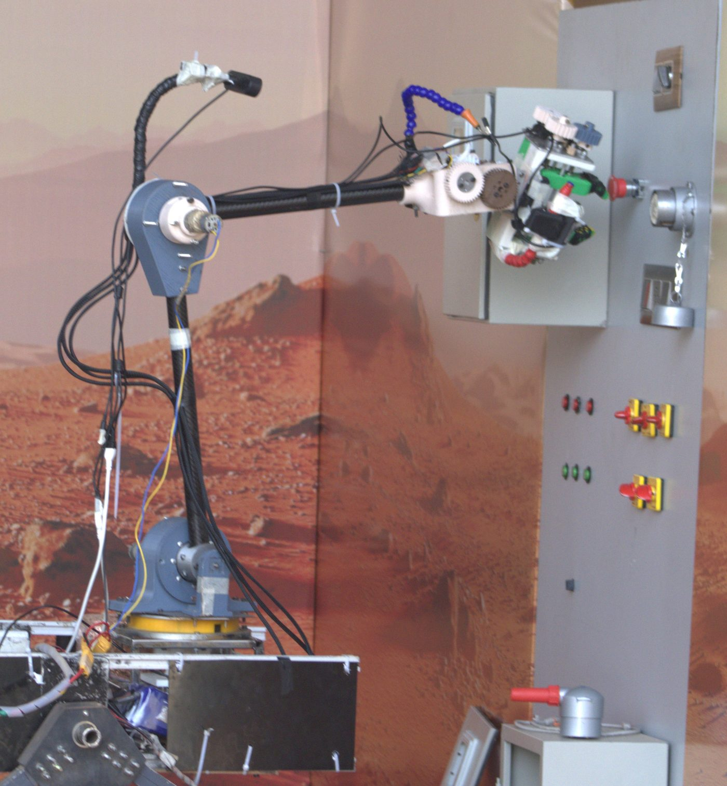
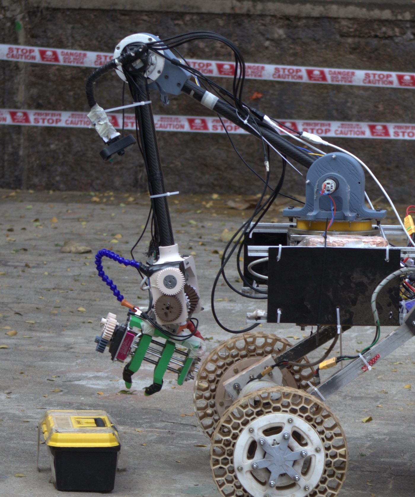
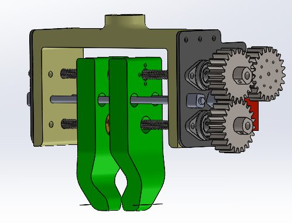
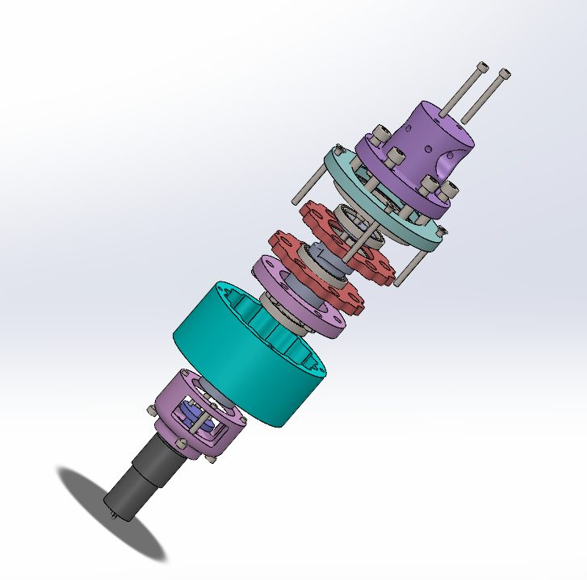

Team Robocon IITR
Our rover’s 6-DOF arm had to lift heavy, awkward objects and work precisely on an equipment panel, without the cost and weight of commercial gearboxes. I designed its high-torque shoulder and elbow actuators and its end-effector. The arm helped the team reach International Rank 2 in the IDMO arm task at IRC 2026.
120 N·mjoint torque
15:1cycloidal reduction
≤0.5°backlash
9–10 kgpayload
1.2 mreach
Non-Pinwheel Cycloidal Actuator
- Designed and fabricated a 3D-printed non-pinwheel cycloidal drive (15:1, 1.08 kg) driven by a DC motor; removing the ring-pin set cuts part count, cost and assembly effort
- Delivered 120 N·m with ≤0.5° backlash and full backdrivability, at a fraction of the cost of a commercial gearbox
- Load testing exposed an eccentric-shaft failure; reinforcing the PLA shaft with a triangular bolt pattern raised load capacity at no extra cost
Gripper & Differential Wrist
- Self-centering parallel lead-screw gripper with an 11 cm stroke for precise, symmetric grasping of heavy payloads
- Compact 2-DOF fully differential wrist with 3D-printed bevel gears that shares load across both motors for pitch and roll
- Integrated on the 6-DOF arm, reliably handling 9–10 kg at up to 1.2 m reach
Skills & Tools
Cycloidal gear design, gripper and wrist design, bevel-gear differentials, FDM 3D printing, load testing, SolidWorks
Gallery



